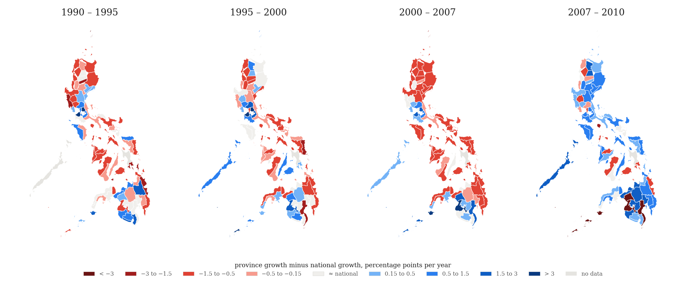
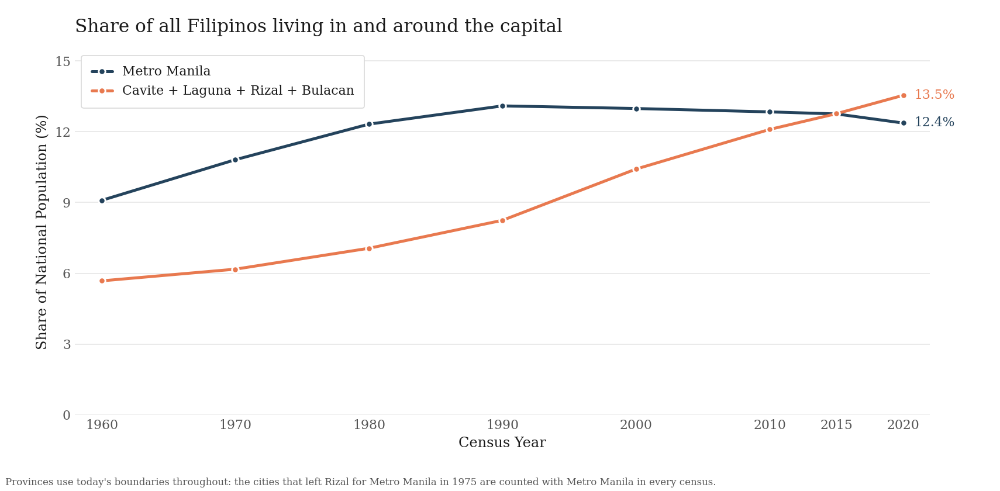
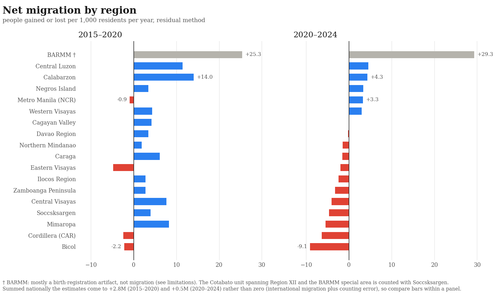
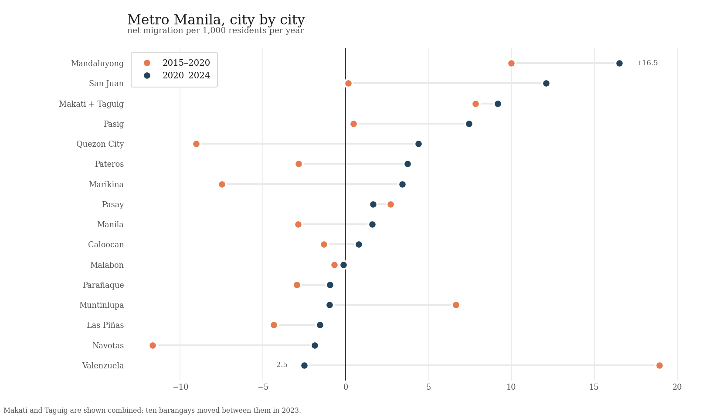
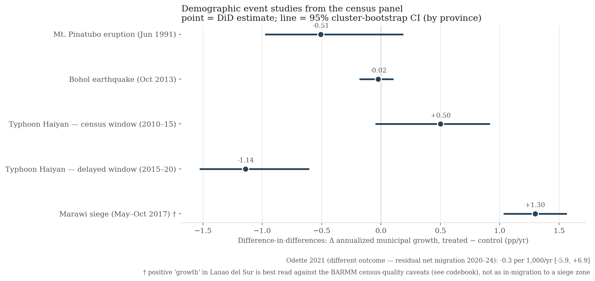
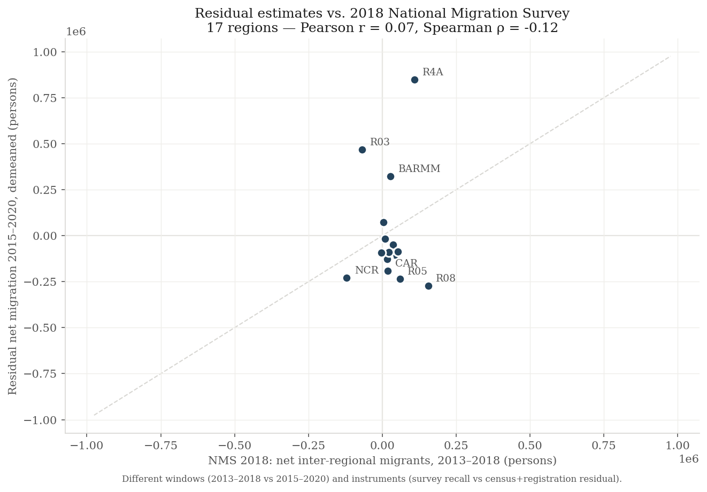
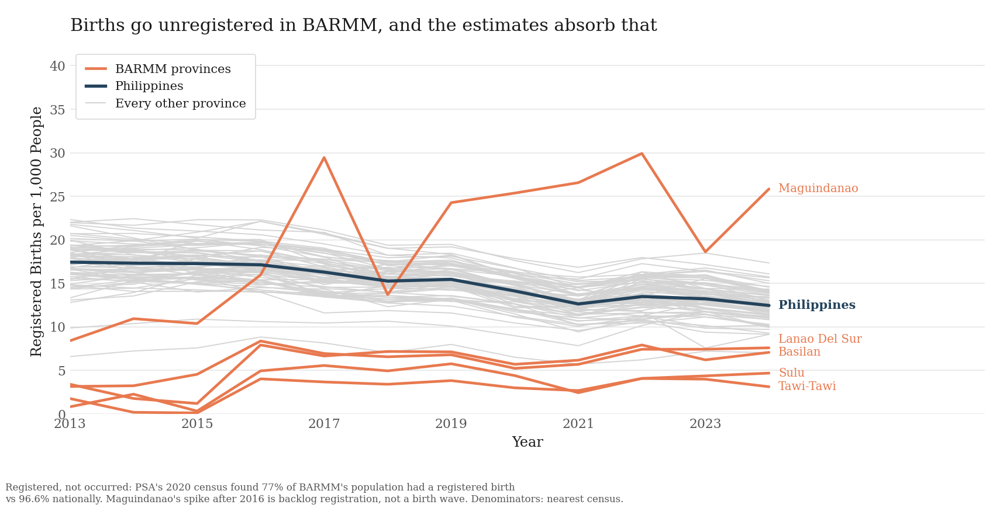

I found the PSA's internal migration dataset to be hard to work with, so I
wrote another one. It uses public government data and the residual method, which is a
fairly basic method to estimate demographics. This work was inspired by Tobi's work on
OpenHalalan (stay posted;
Tobi, Quintin, Ignacio, and I have some upcoming work on estimating the economic effects
of flood control projects). My website is
here, and my Google Scholar is
here.
The census counted everyone in May 2020 and again in July 2024. Where a town grew
faster than its own births and deaths can explain, people moved in. Where it grew slower,
or shrank, people moved out.
Blue = people moved in,
red = people moved out.
Hover over any town for its numbers.
Jump to:
Boundaries: PSA/NAMRIA via philippines-json-maps (2023)drag to pan · ctrl-scroll to zoom
Gray means no estimate could be published, mostly because a boundary
changed between the two censuses. Rates are people gained or lost per 1,000 residents
per year.
1960–2024
The same map since 1960
Town-level birth and death records only begin in 2017, so the migration estimate above
cannot be computed for earlier decades. Census counts, however, go back to 1960, and this
answers a simple question: which places grew faster than the country as a whole, and which
fell behind? However, this confounds migration with local differences in birth rates, so
it's a rougher estimate than our data above. But large effects are still pretty clear,
such as growth rates in Mindanao in the 60s and 70s, and the long pull towards Manila
and its suburbs. The small maps below show all eight windows at once; click one to
explore it in detail, or press play.
Boundaries: PSA/NAMRIA via philippines-json-maps (2023)
1960–1970

The censuses of 1995 and 2007 were published at town level only on paper,
so the map above steps over them, from 1990 to 2000 and from 2000 to 2010. Province
totals for those censuses survive, and they split the two decades into the four shorter
windows shown here. Short windows amplify differences in how well each census counted,
so read these as broad patterns. Leyte's 1995 and 2007 counts and Palawan's 1990 count
carry footnotes in the source and are left gray.
Findings
What the data shows
1 · People move toward the capital, but around it rather than into it
This is the longest-running pattern in the data. Cavite, Laguna, Rizal, and Bulacan,
the four provinces around Metro Manila, more than doubled their share of the national
population over sixty years, and between 2015 and 2020 they overtook the capital itself.
The flows behind that are large: in 2015–2020 Cavite alone gained almost half a million
people net (24.6 per 1,000 residents per year) while core cities like Quezon City
lost people.

Metro Manila's share of the national population peaked around 1990 and has
drifted down since; the four provinces around it passed it between 2015 and 2020.
2 · After 2020, the map rearranged
The newest census window changes the ranking. The capital region flipped from losing
about one person per 1,000 per year to gaining 3.3. Ten of its sixteen cities gained
people, up from seven in 2015–2020. Meanwhile several regions that had been gaining
(Mimaropa, Soccsksargen, Central Visayas) flipped to losing, and the Bicol region lost
more people relative to its size than any other.

Regions ranked by their 2020–2024 rate, same order in both panels. Blue
bars gain people, red bars lose them. In 2015–2020 almost every region shows a gain
because the estimates carry a positive counting error that period; the ranking within
each panel is what to read. BARMM is grayed out because its numbers mostly reflect
the civil-registration gap described under limits.

Each row is one Metro Manila city; the coral dot is its 2015–2020 rate and
the navy dot its 2020–2024 rate. Most navy dots sit to the right of the coral ones.
Quezon City and Marikina flipped from clear losses to gains; Valenzuela moved the other
way, from the biggest gain in the region to a small loss.
3 · Disasters push people out late, not immediately
Typhoon Haiyan's landfall corridor grew at a normal rate in the census window that
contained the storm, then fell 1.1 percentage points a year behind comparable towns in
2015–2020. The population cost arrived after the emergency ended. Mount Pinatubo shows
the same signature stretched over the 1990s. The Bohol earthquake, after which
reconstruction was fast, left no visible mark at all.

Each line is one disaster, measured as the growth of affected towns minus
the growth of similar towns that were not affected, with a 95% confidence interval.
Marawi seemed to gain during the siege (†), which I find confusing.
Method
How the estimates are made
A town's population can only really change for three reasons: people are born, people
die, or people move. We have some information available to us which can rule out the
first two: a census gives us the population at two dates, and the civil registry gives
us births and deaths in between. So whatever part of the change is left over after
births and deaths must be migration. This is called the residual method, and it
is a standard demographic tool: the same logic is used to estimate populations that no
survey can count directly, like undocumented immigrants in the US census
(Warren
and Passel 1987; Demography
2021).
For example: a town counts 10,000 people in 2020 and 11,000 in 2024, and its registry
shows 1,500 births and 400 deaths. Births and deaths explain a gain of 1,100, but the
town only gained 1,000. The difference, 100 people, is the number who moved away on net.
Most of the work here is bookkeeping, since I found the PSA census data hard to work
with. Files are scattered across sites and formats, and it's kind of mind-boggling to
keep track of all the changes in name, category, etc. In this dataset we do our best to
track every such change since 1977 so that each town is compared with itself, and you
get neat longitudinal comparisons.
Of course, such a method inherits the flaws of its inputs, as births and deaths that
are never registered end up being counted as migration.

There is no independent benchmark to grade these estimates against. The
only national migration survey (2018) asked people where they lived five years earlier,
but a person who left a province cannot be interviewed in it, so the survey misses
out-migration; its own regional net flows add up to +388,000 people instead of zero.
The survey and this dataset agree on the strongest patterns: the capital region loses
people and Calabarzon gains them.
Limitations
Where the estimates are weak
Be careful about reading the BARMM rows too deeply. I suspect the estimates for
Basilan, Sulu, Tawi-Tawi, Lanao del Sur, and Maguindanao mostly measure the reach of the
civil-registration system there, as opposed to migration. PSA's 2020 census found that
77%
of BARMM's population had a registered birth, against 96.6% nationally, and in the
residual arithmetic a birth missing from the registry looks identical to a person moving
in. The region's
2024
census growth (3.4% a year, per PSA) is four times the national rate. With records
this incomplete, it's hard for us to disentangle counting effects from migration.
Every affected row carries a flag.

Registered births per 1,000 people. Every gray line is a province; the
orange lines are BARMM provinces, running at a third of the national rate. The gap
between orange and blue is unregistered births, and it is exactly what the migration
estimates absorb. Maguindanao's spike after 2016 is backlog registration from the
registration
drives running in the region, not a birth wave.
Two more things to keep in mind. First, the estimates do not sum to zero across the
country (+2.8 million for 2015–2020, +0.5 million for 2020–2024). The remainder absorbs
international migration, unregistered births and deaths, and differences in how completely
the two censuses counted, so comparisons between places are more reliable than any single
town's level. Second, small towns have noisy estimates; rows with rates beyond ±50 per
1,000 per year are flagged as extreme in the data.
Uses & gaps
What you can do with this, and what is still missing
Things the dataset can answer today:
Which towns are growing because people are arriving, not because of births.
Those are the towns that will need schools, clinics, housing, and water connections
soonest.
What a disaster did to a place's population. The census panel goes back to 1960,
so you can compare any dated shock against similar towns that were spared. The Haiyan
and Pinatubo results above are worked examples.
Whether public works change where people move. The estimates join to any spending
or project dataset through PSGC codes. We are using this to study the economic impacts
of flood control projects.
Whether global population models get the Philippines right. WorldPop and similar
products publish modeled migration estimates, and this is census-based data to check
them against.
Population change at the barangay level. 35,634 barangays have verified 2010 and
2020 populations, the smallest units in the country where change can be measured.
What is missing, and where help is welcome:
Where people move between. These are net numbers, each town's arrivals minus its
departures. No public origin-to-destination table exists at any useful scale. The
census tables that could partly fill this are listed in the
data inventory.
Who moves. There is no age or sex breakdown yet. Census age tables would support
estimates by age group.
Anything between censuses. Estimates exist only for census windows. Annual records
like school enrollment or voter registration could fill the years in between.
Older municipal records. Births and deaths before 2017 exist only in PDF
publications, so a freedom of information request to PSA is drafted. The primary 2024
municipal census file would replace our verified transcription.
Download
The files
municipal_master.csv
Start here: one row per town and city with its full census history 1960–2024, registered births and deaths, and the migration estimate. Everything below is joined in this one file.
net_migration_municipal_2020_2024.csv
Net migration for 1,626 towns and cities, 2020–2024, with a flag column for the caveats above.
net_migration_province.csv
The same for provinces and highly urbanized cities, for 2015–2020 and 2020–2024.
population_census_municipal.csv
Every town's population in the 8 censuses from 1960 to 2020, checked across two PSA publications.
population_barangay_2020.csv
All 42,041 barangays with their 2020 population. 35,634 of them also have their 2010 population, verified against official municipal totals.
Registered births and deaths: towns 2017–2024, provinces 2006–2024. Missing years are left blank and flagged, never filled in.
municipalities.csv + psgc_changes.csv
The reference list of 1,642 towns and cities, plus 4,688 boundary and name changes since 1977.
atlas/
Ranked tables of the largest gains and losses, and event tables for Haiyan and Marawi.
Everything can be rebuilt from the raw sources with one command:
python3 pipeline/run_all.py. The origin and checksum of every downloaded
source file is logged in data/provenance.jsonl. License: ODbL for the data,
MIT for the code.
Citation
Citing this dataset
@misc{africa2026philippinemigration,
author = {Africa, David Demitri},
title = {Philippine Internal Migration Dataset},
year = {2026},
url = {https://github.com/DavidDemitriAfrica/philippines-internal-migration},
note = {Net internal migration estimates for every Philippine city and
municipality, built from public PSA data}
}